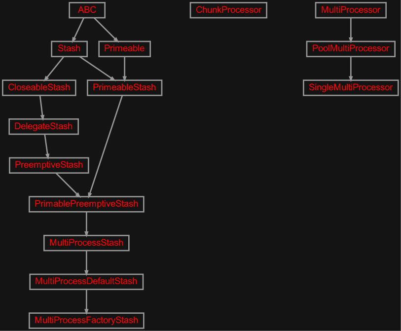

zensols.multi package#
Submodules#
zensols.multi.stash#

Stash extensions to distribute item creation over multiple processes.
- class zensols.multi.stash.ChunkProcessor(config, name, chunk_id, data)[source]#
Bases:
objectRepresents a chunk of work created by the parent and processed on the child.
- __init__(config, name, chunk_id, data)#
-
config:
Configurable# The application context configuration used to create the parent stash.
- class zensols.multi.stash.MultiProcessDefaultStash(delegate, config, name, chunk_size=0, workers=1, processor_class=<class 'zensols.multi.stash.PoolMultiProcessor'>)[source]#
Bases:
MultiProcessStashJust like
MultiProcessStash, but provide defaults as a convenience.- __init__(delegate, config, name, chunk_size=0, workers=1, processor_class=<class 'zensols.multi.stash.PoolMultiProcessor'>)#
-
chunk_size:
int= 0# The size of each group of data sent to the child process to be handled; in some cases the child process will get a chunk of data smaller than this (the last) but never more; if this number is 0, then evenly divide the work so that each worker takes the largets amount of work to minimize the number of chunks (in this case the data is tupleized).
- processor_class#
The class of the processor to use for the handling of the work.
alias of
PoolMultiProcessor
-
workers:
Union[int,float] = 1# The number of processes spawned to accomplish the work or 0 to use all CPU cores. If this is a negative number, add the number of CPU processors with this number, so -1 would result in one fewer works utilized than the number of CPUs, which is a good policy for a busy server.
If the number is a float, then it is taken to be the percentage of the number of processes. If it is a float, the value must be in range (0, 1].
- class zensols.multi.stash.MultiProcessFactoryStash(config, name, factory, enable_preemptive=False, **kwargs)[source]#
Bases:
MultiProcessDefaultStashLike
FactoryStash, but uses a subordinate factory stash to generate the data in a subprocess(es) in the same manner as the super classMultiProcessStash.Attributes
chunk_sizeandworkersboth default to0.- __init__(config, name, factory, enable_preemptive=False, **kwargs)[source]#
Initialize with attributes
chunk_sizeandworkersboth defaulting to0.- Parameters:
config (
Configurable) – the application configuration meant to be populated byzensols.config.factory.ImportClassFactoryname (
str) – the name of the parent stash used to create the chunk, and subsequently process this chunk
-
enable_preemptive:
bool# If
False, do not invoke thefactoryinstance’s data calculation. If the value isalways, then always assume the data is not calcuated, which forces the factory prime. Otherwise, ifNone, then call the super class data calculation falling back on thefactoryif the super returnsFalse.
- class zensols.multi.stash.MultiProcessStash(delegate, config, name, chunk_size, workers)[source]#
Bases:
PrimablePreemptiveStashA stash that forks processes to process data in a distributed fashion. The stash is typically created by a
ImportConfigFactoryin the child process. Work is chunked (grouped) and then sent to child processes. In each, a new instance of this same stash is created usingImportConfigFactoryand then an abstract method is called to dump the data.Implementation details:
The
delegatestash is used to manage the actual persistence of the data.This implemetation of
prime()is to fork processes to accomplish the work.The
process_classattribute is not set directly on this class since subclasses already have non-default fields. However it is set toPoolMultiProcessorby default.
The
_create_data()and_process()methods must be implemented.- abstract _create_data()[source]#
Create data in the parent process to be processed in the child process(es) in chunks. The returned data is grouped in to sub lists and passed to
_process().
- abstract _process(chunk)[source]#
Process a chunk of data, each created by
_create_dataas a group in a subprocess.- Param:
chunk: a list of data generated by
_create_data()to be processed in this method- Return type:
- Returns:
an iterable of
(key, data)tuples, wherekeyis used as the string key for the stash and the return value is the data returned by methods likeload()
- _create_chunk_processor(chunk_id, data)[source]#
Factory method to create the
ChunkProcessorinstance.- Return type:
- See:
zensols.config.factory.ImportConfigFactory
- ATTR_EXP_META = ('chunk_size', 'workers')#
- LOG_CONFIG_SECTION = 'multiprocess_log_config'#
The name of the section to use to configure the log system. This section should be an instance definition of a
LogConfigurator.
- __init__(delegate, config, name, chunk_size, workers)#
-
chunk_size:
int# The size of each group of data sent to the child process to be handled; in some cases the child process will get a chunk of data smaller than this (the last) but never more; if this number is 0, then evenly divide the work so that each worker takes the largets amount of work to minimize the number of chunks (in this case the data is tupleized).
-
config:
Configurable# The application configuration meant to be populated by
zensols.config.factory.ImportClassFactory.
- prime()[source]#
If the delegate stash data does not exist, use this implementation to generate the data and process in children processes.
-
processor_class:
Type[MultiProcessor]# The class of the processor to use for the handling of the work.
-
workers:
Union[int,float]# The number of processes spawned to accomplish the work or 0 to use all CPU cores. If this is a negative number, add the number of CPU processors with this number, so -1 would result in one fewer works utilized than the number of CPUs, which is a good policy for a busy server.
If the number is a float, then it is taken to be the percentage of the number of processes. If it is a float, the value must be in range (0, 1].
- class zensols.multi.stash.MultiProcessor(name)[source]#
Bases:
objectA base class used by
MultiProcessStashto divid the work up into chunks. This should be subclassed if the behavior of how divided work is to be processed is needed.- static _process_work(processor)[source]#
Process a chunk of data in the child process that was created by the parent process.
- Return type:
- __init__(name)#
- class zensols.multi.stash.PoolMultiProcessor(name)[source]#
Bases:
MultiProcessorUses
multiprocessing.Poolto fork/exec processes to do the work.
- class zensols.multi.stash.SingleMultiProcessor(name)[source]#
Bases:
PoolMultiProcessorDoes all work in the current process.
Module contents#
Submodules provide multithreaded convenience to parallelize work.